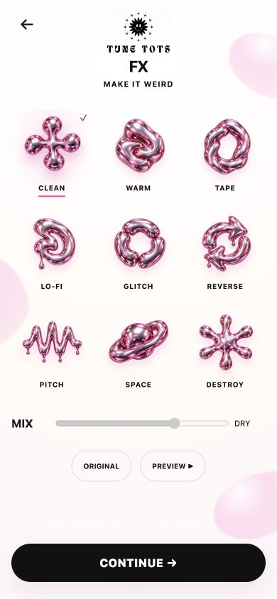
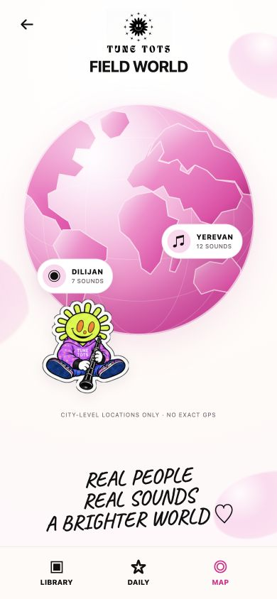
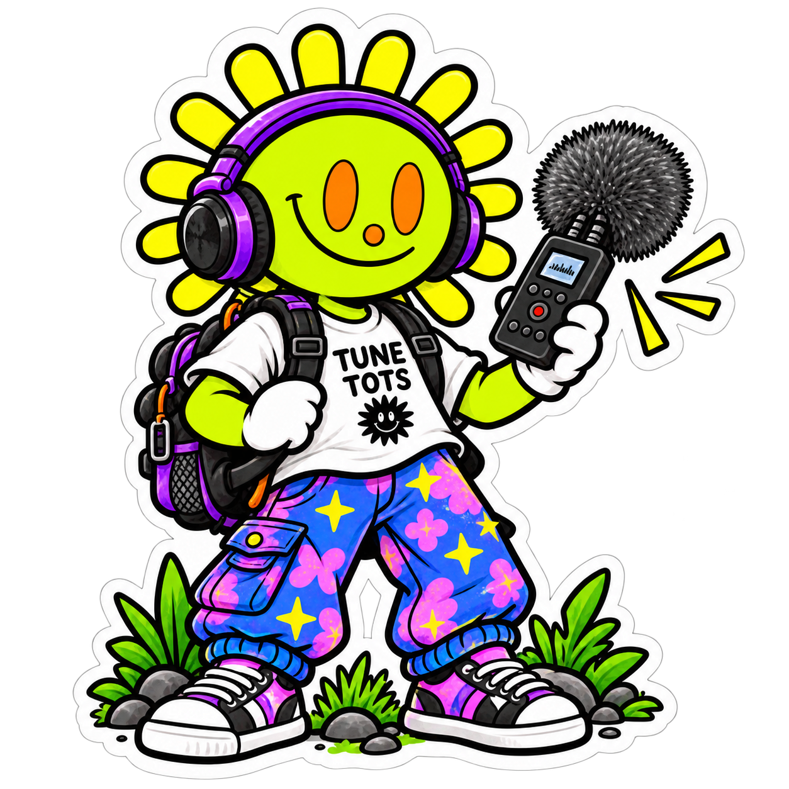

Запиши
До 60 секунд окружающего звука.
Цифровые инструменты / звуковые эксперименты
Приложения, музыкальные инструменты и цифровые эксперименты, которые превращают окружающий мир в музыку.
Смотреть FIELD ↓
придумываем · крутим · слушаем
01 / FIELD · Полевые звуковые приключения

FIELD — полевой рекордер и звуковой дневник от Tune Tots Lab. Записывай звуки вокруг себя, меняй их, собирай личную библиотеку и сохраняй звуковые находки.

слышишь? записывай ↘
FIELD на телефоне
Не макеты интерфейса, а реальные экраны FIELD: главная запись, творческие эффекты и звуковая карта.



Как работает FIELD
До 60 секунд окружающего звука.
Оставь главное и настрой высоту.
Пропусти запись через игровые FX.
Добавь находку в личную библиотеку.
Публикация в World откроется после финальной подготовки.
Что уже работает
Микрофон, таймер до 60 секунд и визуализация реального сигнала.
Волна строится из твоей записи, а не из готовой анимации.
Warm, Glitch, Space и другие эффекты действительно меняют запись.
Приватные находки сохраняются локально на устройстве.
Каждый день FIELD предлагает новый повод выйти на звуковую охоту.

Интерфейс World уже существует; публикация откроется после финальной подготовки.
Маленькая история
Нужно только остановиться и нажать Record.
Готовы слушать?
FIELD работает в браузере и подготовлен для запуска как Telegram Mini App.